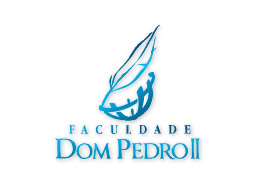

Bem-vindos
O Projeto Inov&AçãoLivre surgiu desenvolvido por professores e alunos da Faculdade Dom Pedro II visando estender também ao público externo, conhecimentos diversos tanto para software livre quanto para outras áreas da tecnologia.
No evento serão apresentadas palestras e cursos e o principal objetivo é promover o uso do software livre.
Público Alvo: Alunos e Entusiastas da Área de Tecnologia.
Data do Evento: 21 e 22 de Outubro/2016
Local: Faculdade Dom Pedro II - Campus 2
Organização
- Aristóteles E. M. da SIlva
- Arivaldo Ferreira
- Pedro Kislansky
- Tatiana Coelho
- Cristiano Rodrigues
- Lidiane Oliveira de Paula
- Priscila Passos Lima
Voluntários
- Augusto Cesar Lima da Silva
- Bruno Dautro
- Caio Cesar Siqueira Nascimento
- Cassiano Vellames
- Cristiano Santana Costa
- Cleidson Soares Santos
- Cyro Matheus Barroso Gomes
- Daiana dos Santos Lopes
- Erivan Bacelar
- Gesica Souza
- Gilson de Melo de Oliveira
- Igor Alves da Silva
- Ingrid Souza Pinheiro
- Leandro Nascimento de Santana
- Maila Silva de Lim
- Mateus Vinicius Mota de Santana
- Renan Marques
- Ricardo Santos de Brito
- Ronald Santos Pires
- Rodrigo de Oliveira Santos
- Silas Miranda
- Thais dos santos costa
- Vinícius Silva Oliveira
- Wesley Franco Dias Ribeiro
- Yan Bernardo
Realização
-
